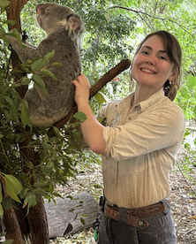

More about us
Studying Hipposideridae reproduction and dimorphism
Prof. Alice Hughes Lab - University of Melbourne
Ahna Ripper-Wilson

My earlier focus centered on native Australian marsupials, however, I became increasingly drawn to bat reproduction, an area that remains comparatively understudied despite its remarkable diversity!
If you're interested in collaborating - send me an email and I’ll be excited to discuss how we could work together!